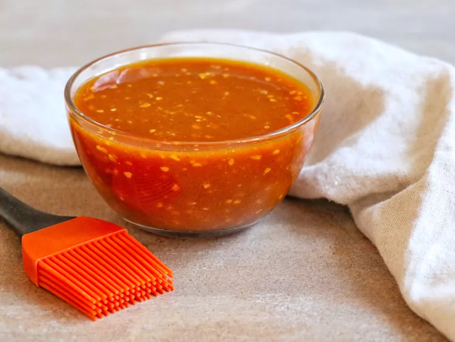

Honeyed Ham Glaze

Dish Description:
A sweet and spicy glaze for ham that's quick and easy to make.
Ingredients:
- 1 cup honey
- ½ cup yellow mustard
- ¼ cup yellow mustard
- 1 tablespoon Worcestershire sauce
- 1 tablespoon dried minced onion
- ¼ teaspoon ground cloves
- ⅛ teaspoon ground ginger
Steps:
- In a bowl, mix together honey, ketchup, mustard, Worcestershire sauce, minced onion, cloves, and ginger. Pour over ham slices as a glaze.